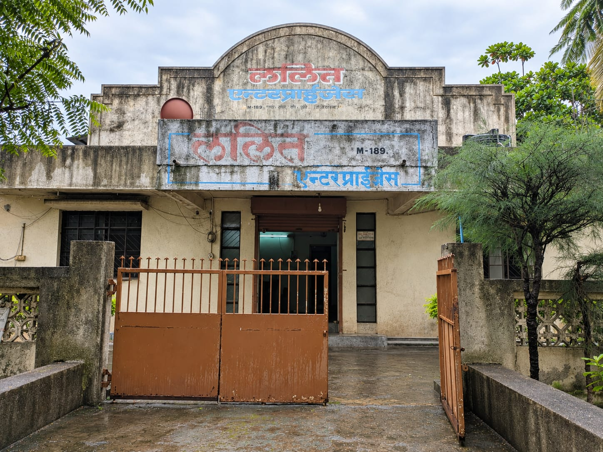
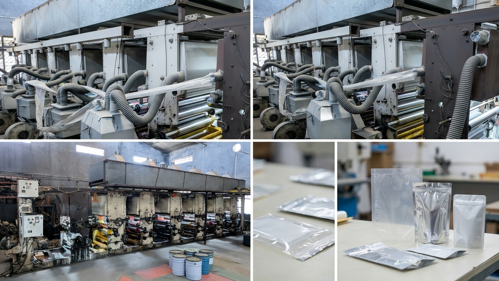
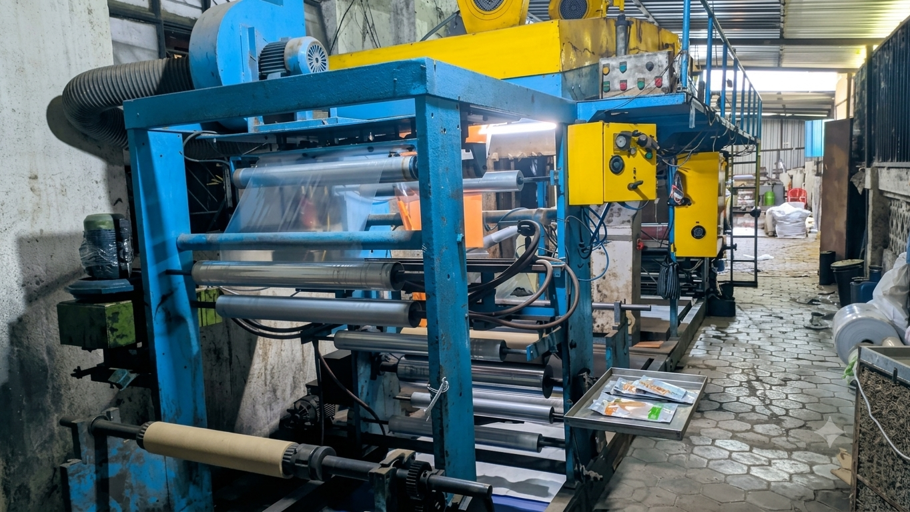
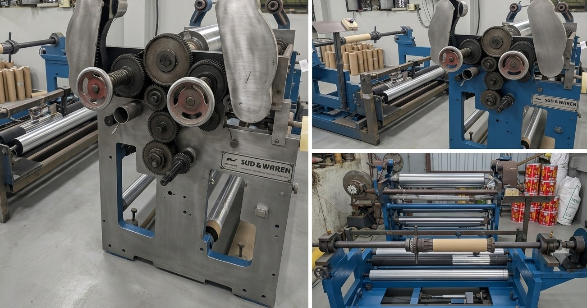
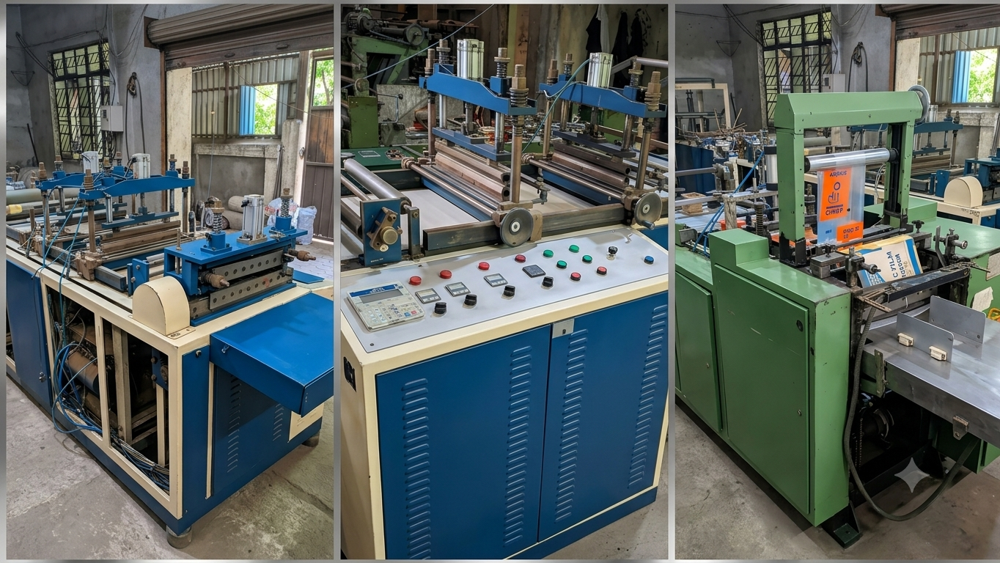
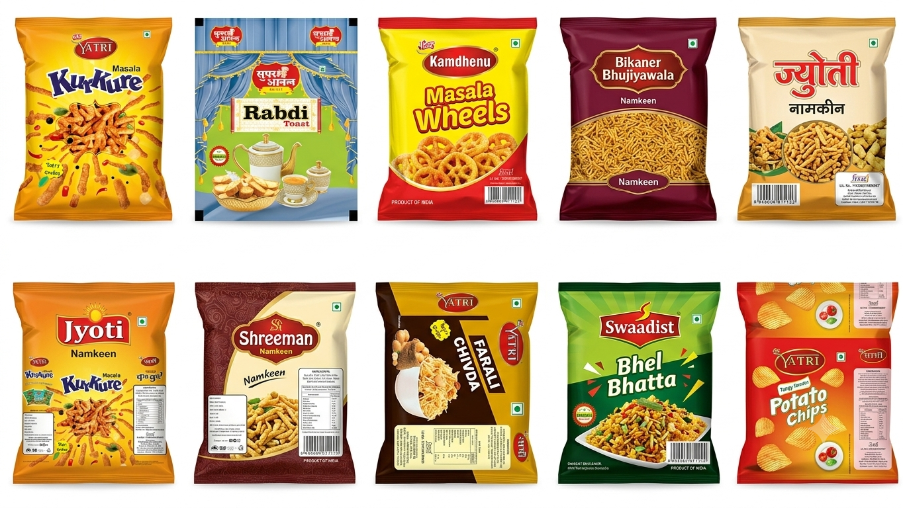
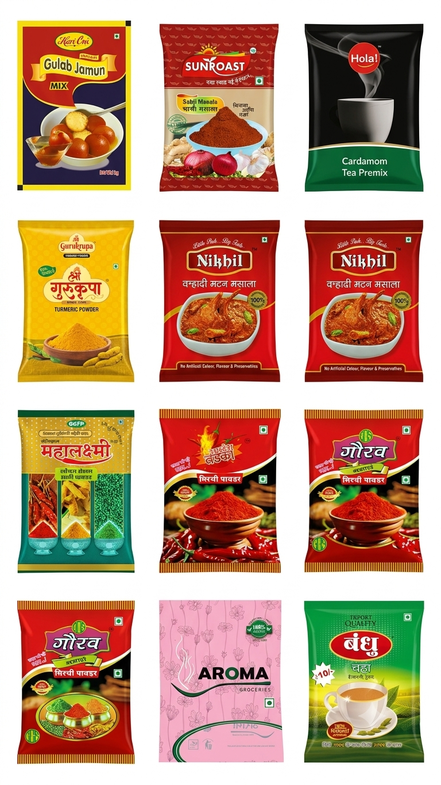
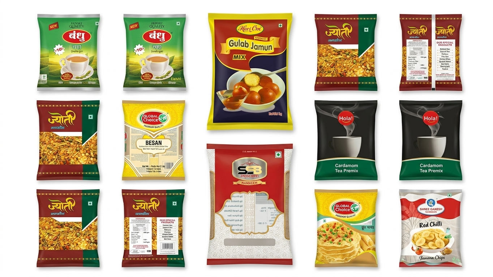
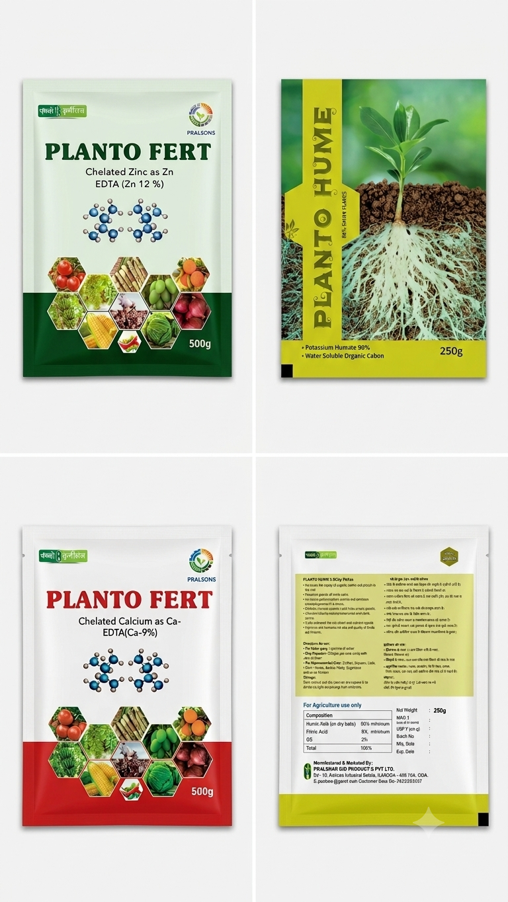

The beginning
Started in Jalgaon with a 2-colour flexo printing machine, initially serving bakery packaging jobs.
ESTABLISHED 1992 · JALGAON, MAHARASHTRA
Lalit Enterprises manufactures multicolour printed flexible laminated pouches and rolls for food and industrial applications.

ABOUT US
“To be a trusted and progressive flexible packaging partner, recognised for dependable manufacturing, responsive service, and enduring customer relationships.”
Lalit Enterprises began in 1992 on the ground floor of the home in Bhushan Colony, Jalgaon, with a two-colour flexographic printing machine and jobs for bakery packaging.
After moving to MIDC and expanding its machinery over the years, the company moved into its own premises at M-189, MIDC, Jalgaon in 1998. The business continued investing in printing, extrusion, lamination, slitting and pouching capabilities.
Since 2016–17, Lalit Enterprises has focused on flexible laminated packaging, supplying multicolour printed laminated pouches and rolls to food, washing powder, fertilizer and other industrial customers.
OUR JOURNEY
Started in Jalgaon with a 2-colour flexo printing machine, initially serving bakery packaging jobs.
Within six months, operations moved to a rented MIDC shed. Cutting, sealing and 4-colour flexo printing were added.
Moved to M-189, MIDC, Jalgaon and expanded into PP extrusion, automatic cutting/sealing and 6-colour flexo printing.
Added 6-colour rotogravure, later converted to 7-colour, followed by solvent-based lamination, slitting and pouching equipment.
Shifted from PP extrusion and flexographic bag production to flexible laminated packaging for food and industrial applications.
Supplying multicolour printed laminated pouches and rolls for food, snacks, washing powder, fertilizers and industrial requirements.
PLANT & INFRASTRUCTURE
Click any machine photo to preview in high resolution with complete specifications.

PRINTING
LAMINATION
CONVERTING
POUCH MAKINGAPPLICATIONS
OUR PRODUCTS & SAMPLES
We engineer high-barrier, custom-printed laminated pouches for an extensive variety of industries — from fresh bakery goods, spices, and savory snacks to detergents, agrochemicals, and industrial goods. Built for shelf appeal, puncture resistance, and long-lasting freshness.




GET IN TOUCH
For enquiries about printed laminated pouches, rolls and flexible packaging requirements, contact Lalit Enterprises directly.